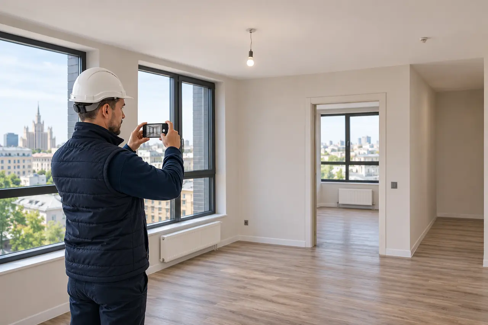
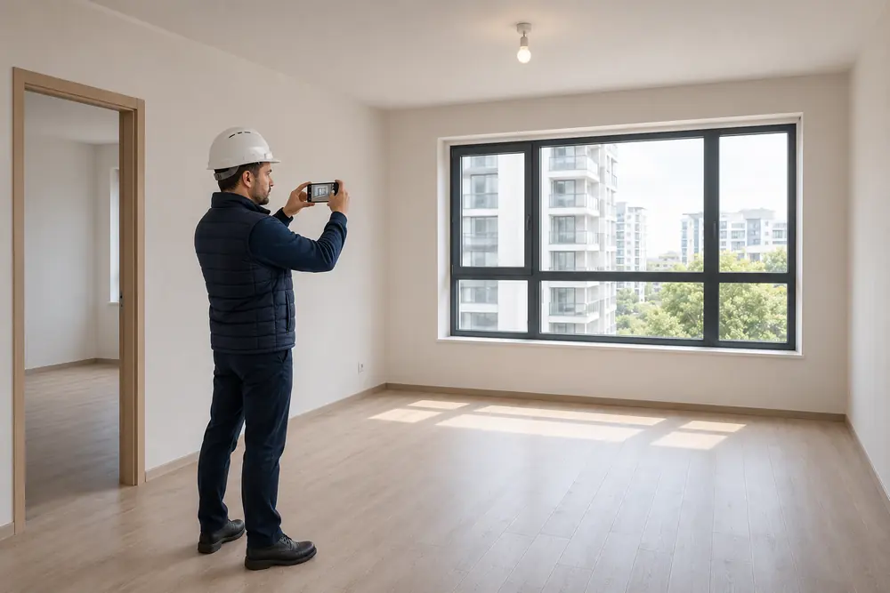

Оформление ипотеки
Банк запрашивает отчёт об оценке квартиры или другого объекта для кредитного решения и оформления залога.
Оценим квартиру, машиноместо или кладовую для ипотеки, рефинансирования и других кредитных операций под залог. Организуем фотосъёмку и передачу материалов оценочной организации, которая определит рыночную стоимость и подготовит отчёт.

Отчёт об оценке может понадобиться для квартиры, машиноместа или кладовой, если объект выступает залогом. Требования к документам и формату отчёта уточняются у банка.
Банк запрашивает отчёт об оценке квартиры или другого объекта для кредитного решения и оформления залога.
При изменении условий кредита банк может запросить актуальную оценку объекта, который остаётся в залоге.
Оценка может понадобиться для другой кредитной операции, если обеспечение банка — недвижимость.
В услуге участвуют «Эксперт Новострой» и оценочная организация. Мы организуем фотосъёмку и передачу материалов, а рыночную стоимость определяет и оформляет в отчёт оценочная организация.
Передайте название банка и его требования, если они уже есть. Уточним состав документов и нужный формат результата.
Сфотографируем объект и передадим материалы оценочной организации.
После получения необходимых документов организация проводит оценку. Способ передачи результата зависит от требований банка.
Точный список зависит от банка, типа объекта и документов, которые уже есть у собственника. Оценочная организация или банк могут запросить:
Не заказывайте документы заранее, пока не уточнили требования к вашему объекту и банку: часть сведений может не понадобиться.
Документы для оценки и других услуг
Фотосъёмку для оценки можно провести во время визита специалиста на приёмку квартиры. Так вы оформляете обе услуги за один визит, экономите время и избегаете расходов на отдельный выезд для фотосъёмки.
При отдельном заказе нужен отдельный выезд, поэтому добавляются транспортные и другие связанные расходы. Итоговая стоимость будет выше; возможность выезда и точную сумму подтвердим заранее.
Заказать приёмку и оценкуОпишите объект и укажите банк — уточним документы и согласуем фотосъёмку. Отчёт подготовит оценочная организация.